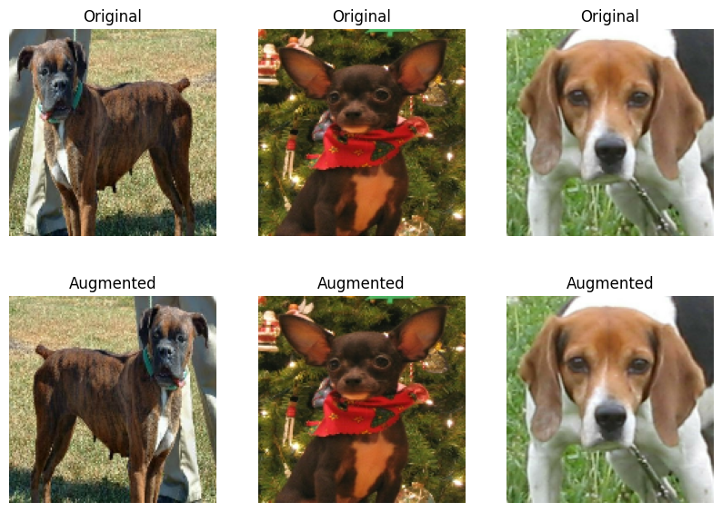
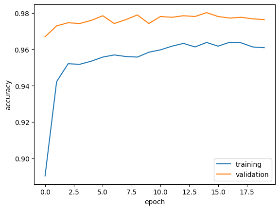

import os
os.environ["KERAS_BACKEND"] = "tensorflow"
import keras
from keras import utils
import tensorflow_datasets as tfdsIntroduction
The url for this blog is: https://andrewshan214.github.io/PIC16B/
The url for the github repo is: https://github.com/andrewshan214/PIC16B
In this blog post, I will be giving a short tutorial on how to implement an image classification model to distinguish between photos of dogs and cats.
First, we import the proper packages in Python to develop our model. (See below)
Creating the dataset
Below is code that is used to create datasets for training, validation, and testing.
train_ds, validation_ds, test_ds = tfds.load(
"cats_vs_dogs",
# 40% for training, 10% for validation, and 10% for test (the rest unused)
split=["train[:40%]", "train[40%:50%]", "train[50%:60%]"],
as_supervised=True, # Include labels
)
print(f"Number of training samples: {train_ds.cardinality()}")
print(f"Number of validation samples: {validation_ds.cardinality()}")
print(f"Number of test samples: {test_ds.cardinality()}")Number of training samples: 9305
Number of validation samples: 2326
Number of test samples: 2326Resizing the images
Below, we write code to resize all of the images to a standard size of (150, 150), as well as to rapidly read data by altering the batch_size to 64.
resize_fn = keras.layers.Resizing(150, 150)
train_ds = train_ds.map(lambda x, y: (resize_fn(x), y))
validation_ds = validation_ds.map(lambda x, y: (resize_fn(x), y))
test_ds = test_ds.map(lambda x, y: (resize_fn(x), y))from tensorflow import data as tf_data
batch_size = 64
train_ds = train_ds.batch(batch_size).prefetch(tf_data.AUTOTUNE).cache()
validation_ds = validation_ds.batch(batch_size).prefetch(tf_data.AUTOTUNE).cache()
test_ds = test_ds.batch(batch_size).prefetch(tf_data.AUTOTUNE).cache()Visualizing the dataset
Below, I have implemented a function called visualize_dataset) that creates two lists, and adds 3 random images of dogs and cats in each, respectively. i use the “take” method to get images of each animal from the dataset to fill the lists.
Then I iterate through the lists to create a plot that displays 3 random cats in the first row and 3 random dogs in the second row, using the pyplot library.
import matplotlib.pyplot as plt
import numpy as np
def visualize_dataset(dataset, num_samples=3, title=""):
plt.figure(figsize=(15, 6))
# initialize empty sets for each animal
cat_images, dog_images = [], []
#for loop to iterate through each image in the dataset
for images, labels in dataset.take(1):
for image, label in zip(images, labels):
if label == 0:
cat_images.append(image.numpy())
else:
dog_images.append(image.numpy())
for i in range(num_samples):
# Plot cat images in the first row
plt.subplot(2, num_samples, i + 1)
plt.imshow(cat_images[i].astype("uint8"))
plt.title("Cat")
plt.axis("off")
# Plot dog images in the second row
plt.subplot(2, num_samples, i + num_samples + 1)
plt.imshow(dog_images[i].astype("uint8"))
plt.title("Dog")
plt.axis("off")
plt.show()
visualize_dataset(train_ds, title="Random Samples from Training Dataset")2024-03-11 15:24:34.212439: W tensorflow/core/kernels/data/cache_dataset_ops.cc:858] The calling iterator did not fully read the dataset being cached. In order to avoid unexpected truncation of the dataset, the partially cached contents of the dataset will be discarded. This can happen if you have an input pipeline similar to `dataset.cache().take(k).repeat()`. You should use `dataset.take(k).cache().repeat()` instead.Checking Label Frequencies
Below, we’ve created an iterator that can go through the dataset, which we’ve used to count the total number of images of both cats and dogs by using a simple for loop.
labels_iterator= train_ds.unbatch().map(lambda image, label: label).as_numpy_iterator()
cat_count = 0
dog_count = 0
# Iterate through labels
for label in labels_iterator:
if label == 0:
cat_count += 1
elif label == 1:
dog_count += 1
print("Number of images with label 0 (cat):", cat_count)
print("Number of images with label 1 (dog):", dog_count)Number of images with label 0 (cat): 4637
Number of images with label 1 (dog): 4668Creating model1
Below we implemented our first model, which includes different layers to the model. Each layer processes a bit of the input data and produces an output. Each layer consists of a set of neurons that perform specific computation on the input data.
After implementing the layers into model1, we compile and fit the model to evaluate the test and validation accuracy.
import tensorflow as tf
from tensorflow.keras import layers
model1 = tf.keras.Sequential([
tf.keras.layers.Conv2D(64, (3, 3), activation='relu', input_shape=(150, 150, 3)),
tf.keras.layers.MaxPooling2D(2, 2),
tf.keras.layers.Conv2D(128, (3, 3), activation='relu'),
tf.keras.layers.MaxPooling2D(2, 2),
tf.keras.layers.Conv2D(256, (3, 3), activation='relu'),
tf.keras.layers.MaxPooling2D(2, 2),
tf.keras.layers.Flatten(),
tf.keras.layers.Dense(512, activation='relu'),
tf.keras.layers.Dropout(0.5),
tf.keras.layers.Dense(1, activation='sigmoid')
])
model1.compile(optimizer='adam',
loss='binary_crossentropy',
metrics=['accuracy'])
history = model1.fit(train_ds,
epochs=20,
validation_data=validation_ds)
# history = model1.fit(train_ds.batch(batch_size),
# epochs=20,
# validation_data=validation_ds.batch(batch_size))Epoch 1/20
146/146 [==============================] - 399s 3s/step - loss: 8.8767 - accuracy: 0.5283 - val_loss: 0.6919 - val_accuracy: 0.5155
Epoch 2/20
146/146 [==============================] - 349s 2s/step - loss: 0.6885 - accuracy: 0.5395 - val_loss: 0.6833 - val_accuracy: 0.5464
Epoch 3/20
146/146 [==============================] - 324s 2s/step - loss: 0.6826 - accuracy: 0.5575 - val_loss: 0.6810 - val_accuracy: 0.5559
Epoch 4/20
146/146 [==============================] - 343s 2s/step - loss: 0.6745 - accuracy: 0.5702 - val_loss: 0.6919 - val_accuracy: 0.5408
Epoch 5/20
146/146 [==============================] - 345s 2s/step - loss: 0.6772 - accuracy: 0.5743 - val_loss: 0.7042 - val_accuracy: 0.5288
Epoch 6/20
146/146 [==============================] - 321s 2s/step - loss: 0.6589 - accuracy: 0.5832 - val_loss: 0.7062 - val_accuracy: 0.5322
Epoch 7/20
146/146 [==============================] - 328s 2s/step - loss: 0.6491 - accuracy: 0.5918 - val_loss: 0.7230 - val_accuracy: 0.5245
Epoch 8/20
146/146 [==============================] - 339s 2s/step - loss: 0.6336 - accuracy: 0.6121 - val_loss: 0.7309 - val_accuracy: 0.5258
Epoch 9/20
146/146 [==============================] - 344s 2s/step - loss: 0.6014 - accuracy: 0.6326 - val_loss: 0.8717 - val_accuracy: 0.5404
Epoch 10/20
146/146 [==============================] - 343s 2s/step - loss: 0.6273 - accuracy: 0.6451 - val_loss: 0.8127 - val_accuracy: 0.5357
Epoch 11/20
146/146 [==============================] - 330s 2s/step - loss: 0.5895 - accuracy: 0.6431 - val_loss: 1.0035 - val_accuracy: 0.5245
Epoch 12/20
146/146 [==============================] - 330s 2s/step - loss: 0.5629 - accuracy: 0.6614 - val_loss: 0.8088 - val_accuracy: 0.5279
Epoch 13/20
146/146 [==============================] - 328s 2s/step - loss: 0.5538 - accuracy: 0.6700 - val_loss: 0.8364 - val_accuracy: 0.5340
Epoch 14/20
146/146 [==============================] - 327s 2s/step - loss: 0.5187 - accuracy: 0.7004 - val_loss: 0.8670 - val_accuracy: 0.5426
Epoch 15/20
146/146 [==============================] - 328s 2s/step - loss: 0.5398 - accuracy: 0.6886 - val_loss: 0.9341 - val_accuracy: 0.5421
Epoch 16/20
146/146 [==============================] - 335s 2s/step - loss: 0.5129 - accuracy: 0.7042 - val_loss: 0.9088 - val_accuracy: 0.5404
Epoch 17/20
146/146 [==============================] - 355s 2s/step - loss: 0.4887 - accuracy: 0.7217 - val_loss: 0.9090 - val_accuracy: 0.5563
Epoch 18/20
146/146 [==============================] - 374s 3s/step - loss: 0.4769 - accuracy: 0.7309 - val_loss: 0.9431 - val_accuracy: 0.5533
Epoch 19/20
146/146 [==============================] - 371s 3s/step - loss: 0.4518 - accuracy: 0.7566 - val_loss: 0.9338 - val_accuracy: 0.5550
Epoch 20/20
146/146 [==============================] - 366s 3s/step - loss: 0.3941 - accuracy: 0.7881 - val_loss: 0.9704 - val_accuracy: 0.5602Some things I experimented with was increasing the model complexity by adding more layers. Additionally, I tried to regularized the data to prevent overfitting.
The validation accuracy of my model stabilized between 62% and 63% during training, which is higher than the baseline.
Visualizing the model accuracy
We use matplotlib.pyplot to visualize the history, as seen below:
from matplotlib import pyplot as plt
plt.plot(history.history["accuracy"])
plt.gca().set(xlabel="epoch", ylabel="training accuracy")Model with Data Augmentation
By augmenting the data, it allows the model to recognize images, even if they’re rotated or mirrored.
The random flip layer is implemented, by randomly mirroring images, and initializing the layer to that.
Similarly, the random rotation layer by randomly rotating the images, and training a layer to the random rotations.
I’ve added before and after photos for the effect of both layers for visual aid. See code and images below.
#random_flip_layer
import matplotlib.pyplot as plt
import tensorflow as tf
# Load a few sample images
sample_images = []
for image, label in train_ds.take(1):
sample_images = image.numpy()[:4] # Take the first three images
# Normalize pixel values to the range [0, 1]
sample_images = sample_images.astype("float32") / 255.0
# Create a RandomFlip layer
random_flip_layer = tf.keras.layers.RandomFlip("horizontal")
# Apply RandomFlip to the sample images
augmented_images = random_flip_layer(sample_images)
# Plot original and augmented images
plt.figure(figsize=(10, 7))
for i in range(0, 3):
# Original image
plt.subplot(2, 3, i + 1)
plt.imshow(sample_images[i])
plt.title("Original")
plt.axis("off")
# Augmented image
plt.subplot(2, 3, i + 4)
plt.imshow(augmented_images[i])
plt.title("Augmented")
plt.axis("off")
plt.show()
#RandomRotation layer
sample_images = []
for image, label in train_ds.take(1):
sample_images = image.numpy()[:3] # Take the first three images
# Normalize pixel values to the range [0, 1]
sample_images = sample_images.astype("float32") / 255.0
# Create a RandomRotation layer
random_rotation_layer = tf.keras.layers.RandomRotation(factor=0.5)
# Apply RandomRotation to the sample images
augmented_images = random_rotation_layer(sample_images)
# Plot original and augmented images
plt.figure(figsize=(10, 7))
for i in range(0, 3):
# Original image
plt.subplot(2, 3, i + 1)
plt.imshow(sample_images[i])
plt.title("Original")
plt.axis("off")
# Augmented image
plt.subplot(2, 3, i + 4)
plt.imshow(augmented_images[i])
plt.title("Augmented")
plt.axis("off")
plt.show()Model 2
After creating those two layers above, we include them in the second model (in addition to all the other layers from model1) to hopefully find a more accurate model. See code below.
#creating model2 with augmentation layers
model2 = tf.keras.Sequential([
tf.keras.layers.RandomFlip("horizontal"),
tf.keras.layers.RandomRotation(factor=0.2),
tf.keras.layers.Conv2D(32, (3, 3), activation='relu', input_shape=(150, 150, 3)),
tf.keras.layers.MaxPooling2D(2, 2),
tf.keras.layers.Conv2D(64, (3, 3), activation='relu'),
tf.keras.layers.MaxPooling2D(2, 2),
tf.keras.layers.Flatten(),
tf.keras.layers.Dense(128, activation='relu'),
tf.keras.layers.Dropout(0.5),
tf.keras.layers.Dense(1, activation='sigmoid')
])
# Compile model2
model2.compile(optimizer='adam',
loss='binary_crossentropy',
metrics=['accuracy'])
# Train model2
history2 = model2.fit(train_ds,
epochs=20,
validation_data=validation_ds)Epoch 1/20
146/146 [==============================] - 64s 424ms/step - loss: 14.0102 - accuracy: 0.5652 - val_loss: 0.6646 - val_accuracy: 0.6028
Epoch 2/20
146/146 [==============================] - 73s 499ms/step - loss: 0.6700 - accuracy: 0.5996 - val_loss: 0.6511 - val_accuracy: 0.6277
Epoch 3/20
146/146 [==============================] - 73s 500ms/step - loss: 0.6526 - accuracy: 0.6272 - val_loss: 0.6448 - val_accuracy: 0.6427
Epoch 4/20
146/146 [==============================] - 74s 507ms/step - loss: 0.6405 - accuracy: 0.6420 - val_loss: 0.6272 - val_accuracy: 0.6711
Epoch 5/20
146/146 [==============================] - 73s 501ms/step - loss: 0.6301 - accuracy: 0.6495 - val_loss: 0.6133 - val_accuracy: 0.6883
Epoch 6/20
146/146 [==============================] - 74s 510ms/step - loss: 0.6266 - accuracy: 0.6462 - val_loss: 0.6142 - val_accuracy: 0.6776
Epoch 7/20
146/146 [==============================] - 77s 528ms/step - loss: 0.6211 - accuracy: 0.6627 - val_loss: 0.6052 - val_accuracy: 0.6879
Epoch 8/20
146/146 [==============================] - 77s 526ms/step - loss: 0.6068 - accuracy: 0.6754 - val_loss: 0.5935 - val_accuracy: 0.7064
Epoch 9/20
146/146 [==============================] - 77s 528ms/step - loss: 0.6003 - accuracy: 0.6833 - val_loss: 0.5868 - val_accuracy: 0.6935
Epoch 10/20
146/146 [==============================] - 74s 505ms/step - loss: 0.5975 - accuracy: 0.6876 - val_loss: 0.5812 - val_accuracy: 0.6900
Epoch 11/20
146/146 [==============================] - 74s 508ms/step - loss: 0.5929 - accuracy: 0.6910 - val_loss: 0.5637 - val_accuracy: 0.7034
Epoch 12/20
146/146 [==============================] - 72s 496ms/step - loss: 0.5835 - accuracy: 0.6937 - val_loss: 0.5592 - val_accuracy: 0.7240
Epoch 13/20
146/146 [==============================] - 72s 492ms/step - loss: 0.5918 - accuracy: 0.6905 - val_loss: 0.5864 - val_accuracy: 0.6943
Epoch 14/20
146/146 [==============================] - 75s 510ms/step - loss: 0.5700 - accuracy: 0.7091 - val_loss: 0.5613 - val_accuracy: 0.7283
Epoch 15/20
146/146 [==============================] - 70s 479ms/step - loss: 0.5692 - accuracy: 0.7075 - val_loss: 0.5369 - val_accuracy: 0.7369
Epoch 16/20
146/146 [==============================] - 72s 494ms/step - loss: 0.5681 - accuracy: 0.7055 - val_loss: 0.5673 - val_accuracy: 0.7193
Epoch 17/20
146/146 [==============================] - 70s 479ms/step - loss: 0.5588 - accuracy: 0.7099 - val_loss: 0.5414 - val_accuracy: 0.7334
Epoch 18/20
146/146 [==============================] - 71s 485ms/step - loss: 0.5510 - accuracy: 0.7207 - val_loss: 0.5134 - val_accuracy: 0.7459
Epoch 19/20
146/146 [==============================] - 74s 505ms/step - loss: 0.5360 - accuracy: 0.7313 - val_loss: 0.5164 - val_accuracy: 0.7567
Epoch 20/20
146/146 [==============================] - 73s 497ms/step - loss: 0.5382 - accuracy: 0.7312 - val_loss: 0.5260 - val_accuracy: 0.7468The accuracy of my model stabilized between 64% and 65% during training, which is a bit higher than in model1, and still higher than 60%.
In model2, if the accuracy stabilized around 64% to 65% during training and the validation accuracy closely tracked the training accuracy without diverging significantly, it indicates that the model may not be overfitting. Signs of overfitting include a large gap between training and validation accuracy or when the validation accuracy starts decreasing while the training accuracy continues to increase.
As with model1, we will visualize our results.
plt.plot(history2.history["accuracy"])
plt.gca().set(xlabel="epoch", ylabel="training accuracy")Model 3
We implemented model 3 hoping to make training the model faster by implemented a preprocessor layer that would handle the scaling of the RGB values prior to the training process. This allows the computer to focus more energy on handling actual signal in the data and less energy having the weights adjust to the data scale.
i = keras.Input(shape=(150, 150, 3))
# The pixel values have the range of (0, 255), but many models will work better if rescaled to (-1, 1.)
# outputs: `(inputs * scale) + offset`
scale_layer = keras.layers.Rescaling(scale=1 / 127.5, offset=-1)
x = scale_layer(i)
preprocessor = keras.Model(inputs = [i], outputs = [x])
model3 = tf.keras.Sequential([
preprocessor,
tf.keras.layers.RandomFlip("horizontal"),
tf.keras.layers.RandomRotation(factor=0.2),
tf.keras.layers.Conv2D(32, (3, 3), activation='relu'),
tf.keras.layers.MaxPooling2D(2, 2),
tf.keras.layers.Conv2D(64, (3, 3), activation='relu'),
tf.keras.layers.MaxPooling2D(2, 2),
tf.keras.layers.Flatten(),
tf.keras.layers.Dense(128, activation='relu'),
tf.keras.layers.Dropout(0.5),
tf.keras.layers.Dense(1, activation='sigmoid')
])
# Compile model3
model3.compile(optimizer='adam',
loss='binary_crossentropy',
metrics=['accuracy'])
history3 = model3.fit(train_ds,
epochs=20, # Increase the number of epochs
validation_data=validation_ds)Epoch 1/20
146/146 [==============================] - 67s 456ms/step - loss: 0.7266 - accuracy: 0.5728 - val_loss: 0.6305 - val_accuracy: 0.6664
Epoch 2/20
146/146 [==============================] - 69s 470ms/step - loss: 0.6211 - accuracy: 0.6585 - val_loss: 0.5609 - val_accuracy: 0.7223
Epoch 3/20
146/146 [==============================] - 66s 451ms/step - loss: 0.5794 - accuracy: 0.6969 - val_loss: 0.5290 - val_accuracy: 0.7442
Epoch 4/20
146/146 [==============================] - 65s 443ms/step - loss: 0.5574 - accuracy: 0.7180 - val_loss: 0.5131 - val_accuracy: 0.7528
Epoch 5/20
146/146 [==============================] - 66s 449ms/step - loss: 0.5419 - accuracy: 0.7316 - val_loss: 0.5037 - val_accuracy: 0.7571
Epoch 6/20
146/146 [==============================] - 65s 448ms/step - loss: 0.5307 - accuracy: 0.7329 - val_loss: 0.4927 - val_accuracy: 0.7623
Epoch 7/20
146/146 [==============================] - 72s 494ms/step - loss: 0.5173 - accuracy: 0.7459 - val_loss: 0.4771 - val_accuracy: 0.7678
Epoch 8/20
146/146 [==============================] - 69s 471ms/step - loss: 0.5063 - accuracy: 0.7536 - val_loss: 0.4839 - val_accuracy: 0.7704
Epoch 9/20
146/146 [==============================] - 67s 459ms/step - loss: 0.5076 - accuracy: 0.7545 - val_loss: 0.4746 - val_accuracy: 0.7760
Epoch 10/20
146/146 [==============================] - 64s 440ms/step - loss: 0.4912 - accuracy: 0.7695 - val_loss: 0.4892 - val_accuracy: 0.7713
Epoch 11/20
146/146 [==============================] - 65s 447ms/step - loss: 0.4854 - accuracy: 0.7668 - val_loss: 0.4462 - val_accuracy: 0.7954
Epoch 12/20
146/146 [==============================] - 64s 440ms/step - loss: 0.4799 - accuracy: 0.7710 - val_loss: 0.4689 - val_accuracy: 0.7846
Epoch 13/20
146/146 [==============================] - 66s 455ms/step - loss: 0.4724 - accuracy: 0.7740 - val_loss: 0.4539 - val_accuracy: 0.7975
Epoch 14/20
146/146 [==============================] - 65s 443ms/step - loss: 0.4642 - accuracy: 0.7810 - val_loss: 0.4534 - val_accuracy: 0.7962
Epoch 15/20
146/146 [==============================] - 65s 445ms/step - loss: 0.4613 - accuracy: 0.7825 - val_loss: 0.4515 - val_accuracy: 0.8014
Epoch 16/20
146/146 [==============================] - 64s 435ms/step - loss: 0.4512 - accuracy: 0.7828 - val_loss: 0.4683 - val_accuracy: 0.7829
Epoch 17/20
146/146 [==============================] - 64s 440ms/step - loss: 0.4552 - accuracy: 0.7875 - val_loss: 0.4413 - val_accuracy: 0.7979
Epoch 18/20
146/146 [==============================] - 66s 452ms/step - loss: 0.4485 - accuracy: 0.7940 - val_loss: 0.4312 - val_accuracy: 0.8083
Epoch 19/20
146/146 [==============================] - 71s 483ms/step - loss: 0.4311 - accuracy: 0.8032 - val_loss: 0.4197 - val_accuracy: 0.8156
Epoch 20/20
146/146 [==============================] - 69s 473ms/step - loss: 0.4303 - accuracy: 0.8077 - val_loss: 0.4345 - val_accuracy: 0.8113The validation accuracy stabilized between 80% and 82% during training This is much higher than the val_accuracy of model1, which was ~60%.
Since there is not a significant gap between the training and validation accuracy, it suggests that model3 is not overfitting the data.
Visualizing model3 results
We will once again visualize these results.
plt.plot(history3.history["accuracy"])
plt.gca().set(xlabel="epoch", ylabel="training accuracy")Transfer Learning
Transfer learning is essentially accessing a pre-existing base model and incorporating it into our own model. The first few lines of the code below is downloading MobileNetV3Large, which will serve as our base model. We create a base_model_layer that we implement into our model4, which is constructed in the same manner as the previous 3 models.
IMG_SHAPE = (150, 150, 3)
base_model = keras.applications.MobileNetV3Large(input_shape=IMG_SHAPE,
include_top=False,
weights=None)
weights_path = '/Users/andrewhan/PIC16B/posts/Homework 5 - Image Classification/weights_mobilenet_v3_large_224_1.0_float_no_top_v2.h5'
base_model.load_weights(weights_path)
base_model.trainable = False
i = keras.Input(shape=IMG_SHAPE)
x = base_model(i, training = False)
base_model_layer = keras.Model(inputs = i, outputs = x)
data_augmentation = tf.keras.Sequential([
tf.keras.layers.RandomFlip("horizontal"),
tf.keras.layers.RandomRotation(factor=0.2)
])
model4 = tf.keras.Sequential([
data_augmentation,
base_model,
tf.keras.layers.GlobalAveragePooling2D(),
tf.keras.layers.Dense(2, activation='softmax')
])
model4.compile(optimizer='adam',
loss='sparse_categorical_crossentropy',
metrics=['accuracy'])
history4 = model4.fit(train_ds,
epochs=20, # Increase the number of epochs
validation_data=validation_ds)Epoch 1/20
146/146 [==============================] - 41s 262ms/step - loss: 0.2380 - accuracy: 0.8972 - val_loss: 0.0899 - val_accuracy: 0.9656
Epoch 2/20
146/146 [==============================] - 37s 253ms/step - loss: 0.1325 - accuracy: 0.9462 - val_loss: 0.0767 - val_accuracy: 0.9725
Epoch 3/20
146/146 [==============================] - 37s 256ms/step - loss: 0.1177 - accuracy: 0.9525 - val_loss: 0.0814 - val_accuracy: 0.9699
Epoch 4/20
146/146 [==============================] - 38s 259ms/step - loss: 0.1106 - accuracy: 0.9550 - val_loss: 0.0710 - val_accuracy: 0.9759
Epoch 5/20
146/146 [==============================] - 40s 273ms/step - loss: 0.1081 - accuracy: 0.9570 - val_loss: 0.0714 - val_accuracy: 0.9755
Epoch 6/20
146/146 [==============================] - 41s 280ms/step - loss: 0.1108 - accuracy: 0.9567 - val_loss: 0.0782 - val_accuracy: 0.9733
Epoch 7/20
146/146 [==============================] - 51s 350ms/step - loss: 0.1054 - accuracy: 0.9570 - val_loss: 0.0728 - val_accuracy: 0.9738
Epoch 8/20
146/146 [==============================] - 45s 308ms/step - loss: 0.1033 - accuracy: 0.9595 - val_loss: 0.0708 - val_accuracy: 0.9746
Epoch 9/20
146/146 [==============================] - 42s 287ms/step - loss: 0.0892 - accuracy: 0.9632 - val_loss: 0.0670 - val_accuracy: 0.9772
Epoch 10/20
146/146 [==============================] - 41s 281ms/step - loss: 0.0995 - accuracy: 0.9594 - val_loss: 0.0642 - val_accuracy: 0.9781
Epoch 11/20
146/146 [==============================] - 41s 279ms/step - loss: 0.0935 - accuracy: 0.9623 - val_loss: 0.0660 - val_accuracy: 0.9768
Epoch 12/20
146/146 [==============================] - 41s 278ms/step - loss: 0.0931 - accuracy: 0.9637 - val_loss: 0.0701 - val_accuracy: 0.9755
Epoch 13/20
146/146 [==============================] - 42s 284ms/step - loss: 0.0975 - accuracy: 0.9611 - val_loss: 0.0644 - val_accuracy: 0.9772
Epoch 14/20
146/146 [==============================] - 40s 274ms/step - loss: 0.0879 - accuracy: 0.9657 - val_loss: 0.0729 - val_accuracy: 0.9738
Epoch 15/20
146/146 [==============================] - 41s 279ms/step - loss: 0.0938 - accuracy: 0.9626 - val_loss: 0.0666 - val_accuracy: 0.9772
Epoch 16/20
146/146 [==============================] - 41s 280ms/step - loss: 0.0884 - accuracy: 0.9661 - val_loss: 0.0727 - val_accuracy: 0.9738
Epoch 17/20
146/146 [==============================] - 41s 282ms/step - loss: 0.0954 - accuracy: 0.9607 - val_loss: 0.0687 - val_accuracy: 0.9768
Epoch 18/20
146/146 [==============================] - 40s 274ms/step - loss: 0.0920 - accuracy: 0.9622 - val_loss: 0.0729 - val_accuracy: 0.9738
Epoch 19/20
146/146 [==============================] - 40s 272ms/step - loss: 0.0941 - accuracy: 0.9629 - val_loss: 0.0711 - val_accuracy: 0.9755
Epoch 20/20
146/146 [==============================] - 41s 277ms/step - loss: 0.0918 - accuracy: 0.9612 - val_loss: 0.0701 - val_accuracy: 0.9764The model4 validation accuracy stabilzed between 97% and 98%, which is greater than the required 93% This val_accuracy is also much higher than from model1, which was around 60%.
There does not seem to be any overfitting as there is not much difference between the test and validation accuracy.
Visualizing the results
plt.plot(history4.history["accuracy"])
plt.gca().set(xlabel="epoch", ylabel="training accuracy")
Score on Test Data
This code below will evaluate the accuracy of model4, which is the most performant model of the four. This will evaluate the unseen test dataset and print the value it returns.
test_loss, test_accuracy = model4.evaluate(test_ds)
# Print the test accuracy
print(f'Test accuracy: {test_accuracy}')37/37 [==============================] - 8s 211ms/step - loss: 0.0784 - accuracy: 0.9742
Test accuracy: 0.9742046594619751The test accuracy was over 97%, so we can see that the model works well. This suggests that the model has effectively learned to distinguish between cats and dogs in the test dataset.
Conclusion
In conclusion, we can see that adding more layers (or more information for the model to account for), the more accurate the model will be at recognizing dogs and cats. As we added more layers to our models, we received higher marks for the validation accuracy in each model.